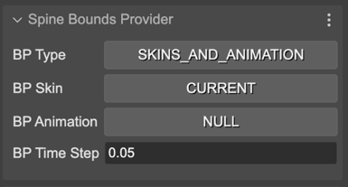
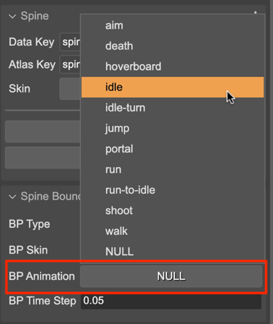

Bounds provider properties
The bounds provider is responsible for computing the size of the SpineGameObject. By default, it uses the setup pose bounding box. There are two built-in implementations of the bounding box: the SetupPoseBoundsProvider (default) and the SkinsAndAnimationBoundsProvider.
The Spine Bounds Provider section in the Inspector view contains the parameters for setting the bounding box to the game object:
With the BP Type you select the bounds provider type: SETUP_POSE (SetupPoseBoundsProvider`) or SKINS_AND_ANIMATION (SkinsAndAnimationBoundsProvider).
The other parameters are only valid if you select the SKINS_AND_ANIMATION bounds provider. This provider uses an animation and an array of skins for computing the bounds.
You can select the skins for the bounds provider in the BP Skin parameter. It gives you two options: CURRENT (uses the current skin in the game object) or ALL (uses all skins available in the game object’s skeleton data).
With the BP Animation parameter you can select what animation to use for the bounds provider. It lists all the animations available in the skeleton data.
With the BP Time Step parameter you can set the precision of the algorithm for computing the bounding size. A smaller time step means more precision, but slower calculation.